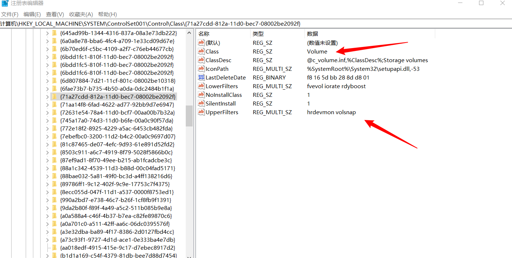

# 磁盘过滤
# 磁盘过滤驱动的概念
首先需要了解一些关于磁盘过滤驱动的相关概念。
# 设备过滤和类过滤
过滤的概念：所谓过滤就是在本来已有的设备栈中加入一个自己的设备。
由于 Windows 向任何一个设备发送 IRP 请求都会首先发给这个设备所在设备栈的最上层设备，然后再依次传递下去，这就使得加入的设备在目标设备之前获取 IRP 请求成为可能，这时候就可以有机会加入用户自己的处理流程。在这里将插入设备栈的用户设备称为过滤设备，将建立这个设备并使其具有特殊功能的驱动称为过滤驱动。
前面我们已经学习了设备过滤，如何建立一个过滤设备并将其绑定在一个有名字的设备上。从设备过滤这个名字可以看出，这是对某个特定设备加以过滤的方法。
但是在实际应用中，还有很多问题，例如，Windows 中有很多即插即用的设备，如何在这些设备加入系统中时就自动地对它们进行绑定？Windows 中还存在一些具有共同类型的设备，如何对这一类设备进行绑定？
实际上，在 Windows 的过滤驱动架构中，还有一种叫作类过滤驱动的驱动程序，能够在某一类特定的设备建立时由 PnP 管理器调用指定的过滤驱动代码，并且允许用户在此时对这一类设备进行绑定。根据用户设备在整个设备栈上相对于系统本来存在设备的不同位置，可以分为上层过滤和下层过滤，其中以上层过滤最为常见，因为这时过滤设备在设备栈上位于实际功能设备的上面，会首先获得 Windows 系统发下来的 IRP 请求，便于过滤设备的实现者进行处理。
# 磁盘设备和磁盘卷设备过滤驱动
本章主要学习 Windows 存储系统的过滤，在学习代码之前，还需要了解一下 Windows 存储系统中的一些概念。
在 Windows 的存储系统中，最底层的是磁盘，而在磁盘上面又有卷，卷虽然只是逻辑上的一个概念，但是 Windows 仍然为其建立了设备，所以在 Windows 的存储系统里有磁盘设备和磁盘卷设备两种类型的设备。
如果一个磁盘卷位于某个磁盘上，那么对于磁盘卷的访问最终也会体现在相应的磁盘上。但是这不意味着它们在一个设备栈上，IRP 不会原封不动地从磁盘卷设备栈上一直传到磁盘设备栈上，更何况 Windows 中还存在着跨磁盘的卷、软 RAID 卷等不能对应到唯一磁盘上的卷。所以务必将这两种设备的概念区分开，而不要将其当作同一种设备来对待。
从驱动的角度来讲，这两种设备收到的读 / 写请求都是针对磁盘大小或者卷大小范围之内的请求，都是以扇区大小对齐的，处理起来也没有什么太大的区别。
在本章中主要讲解磁盘卷设备的上层类过滤驱动，因为对于 Windows 用户来说，卷是最直接看到的对象；而对于开发人员来说，使用卷过滤会在一定程度上减少工作量，因为不需要处理磁盘设备中才会遇到的一些问题，但是同时也限制了一些功能的实现，原因同样是不能处理磁盘设备上的问题，正所谓有利必有弊。
# 注册表和磁盘卷设备过滤驱动
在实际的系统运行过程中，一个普通的驱动程序是如何告知 Windows 操作系统它是一个类过滤驱动，并且如何和相应的设备类联系起来呢？这就需要注册表的帮忙了。
我们知道一个驱动程序作为服务是如何在注册表中存在的：在 \HKEY_LOCAL_MACHINE\SYSTEM\CurrentControlSet\Services 下服务键的名字也就是这个服务的名字了。
在 \HKEY_LOCAL_MACHINE\SYSTEM\CurrentControlSet\Control\Class 下，也有许多类的名字，这些类的名字都是一长串数字，这一长串数字实际上是一个 ClassGUID ，随意选择一个键，下面都会有一个叫作 Class 的值，这就是一个类。
在这些键中，可以找到一个 Class 值为 “Volume” 的键，这就是磁盘卷类。最关心的是其中一个叫作 UpperFilters 的值，这个值起了最为关键的作用 —— 说明这个类的上层过滤驱动都有哪些。

只需要在这个 UpperFilter 值中填入相应的驱动名（服务名），这个驱动就会作为这一类设备的上层过滤驱动被 Windows 操作系统所识别，实际上这样也就完成了上层过滤驱动的安装工作。
# 具有还原功能的磁盘卷过滤驱动
将磁盘卷上的数据恢复到之前的某个时间点，在这个时间点之后无论对磁盘卷上的文件做过什么操作都将被抹去，这个卷被称为还原卷。
由于这个过滤驱动只是为了讲解而写的，所以这里对它的使用条件限制得比较多。这个驱动工作时需要系统中只有一个硬盘，需要使用 Windows XP 系统，并且硬盘被分为 C 盘为主分区、D 盘和 E 盘都为扩展分区的分区形式，而且所有分区都必须是 NTFS 系统。本驱动只保护 D 盘并且会在 E 盘上建立临时文件，而且要求操作系统安装在 C 盘上，故这里需要 C、D、E 三个分区。
# 基本思想
为了实现还原，一种简单的思路如下：
在开启还原之后，所有对还原卷的写操作将被写到另一个地方，而不会真正写在还原卷上。这里所说的另一个地方也可以称之为转存处。
在开启还原之后，所有对还原卷的读操作将分为两种情况处理：一种情况是读了开启还原之前就存在的内容，这种情况就按照正常的读取方式从还原卷上读取；另一种情况是读了开启还原之后写到还原卷上的内容，这种情况将会从转存处把之前写过的内容读取出来。
上述读 / 写必须建立在互斥的基础上，不能出现写了一半就开始读的情况。
重启之后转存处的数据清零，所有在还原开始后被写过的数据也就不复存在了。
上述转存同样必须在卷设定为还原之后立即起作用，而不能出现写了一半才开始转存的情况；否则数据会在重启之后不同步。
如果严格按照这几点来执行，确实能够达到重启之后卷上数据就全部还原的效果。
# 驱动分析
开始学习代码，了解如何用代码实现磁盘的还原功能，学习编写的思路。
# DriverEntry 函数
驱动入口函数，主要负责初始化本驱动的各分发函数。
- 将所有的分发函数都设置成一个统一的处理函数，这个函数是对大部分 IRP 请求的处理方式；
- 将本驱动关心的分发函数指定为驱动专门实现的函数；
- 指定这个驱动的
AddDevice函数和Unload函数。 - 注册一个
boot类型驱动的完成回调函数。
由于这个驱动被注册成了磁盘卷设备的上层过滤驱动，PnP 管理器将会在一个新的磁盘卷设备建立之后，首先调用本过滤驱动的 AddDevice 函数，然后再调用磁盘卷设备驱动中的 AddDevice 函数。这就让过滤驱动有了在系统加入磁盘卷设备起作用之前做一些工作的机会，而 Unload 函数会在过滤驱动结束时被调用，用来做一些清理的工作。不过本过滤驱动将会一直工作到系统关机，所以基本上 Unload 函数将不会做任何清理工作。
这里注意 AddDevice 函数的调用时机。
另外，本过滤驱动是作为一个 boot 类型驱动存在的，这一点可以在注册表的 \HKEY_LOCAL_MACHINE\SYSTEM\CurrentControlSet\Services 下驱动服务的 start 值中指定，0 为 boot 类型。
boot 类型的驱动程序是启动最早的驱动程序，在系统引导时就必须加载完毕；而对于注册为 boot 类型驱动的完成回调函数的函数，将会在所有的 boot 类型驱动执行完毕之后被调用一次，需要注意的是，这时候仍然是系统启动过程中比较早的时候。
在这里需要注册这个回调函数，是因为驱动中有些工作需要等到这个时间才能做，具体是什么工作后面会知道的。
下面是代码：
NTSTATUS | |
DriverEntry( | |
IN PDRIVER_OBJECT DriverObject, | |
IN PUNICODE_STRING RegistryPath | |
) | |
{ | |
int i; | |
//KdBreakPoint(); | |
for (i = 0; i <= IRP_MJ_MAXIMUM_FUNCTION; i++) | |
{ | |
// 初始化这个驱动所有的分发函数，默认值是初始化为 DPDispatchAny | |
DriverObject->MajorFunction[i] = DPDispatchAny; | |
} | |
// 下面将我们特殊关注的分发函数重新赋值为我们自己的处理函数 | |
DriverObject->MajorFunction[IRP_MJ_POWER] = DPDispatchPower; | |
DriverObject->MajorFunction[IRP_MJ_PNP] = DPDispatchPnp; | |
DriverObject->MajorFunction[IRP_MJ_DEVICE_CONTROL] = DPDispatchDeviceControl; | |
DriverObject->MajorFunction[IRP_MJ_READ] = DPDispatchReadWrite; | |
DriverObject->MajorFunction[IRP_MJ_WRITE] = DPDispatchReadWrite; | |
// 将这个驱动的 AddDevice 函数初始化为 DpAddDevice 函数 | |
DriverObject->DriverExtension->AddDevice = DPAddDevice; | |
// 将这个驱动的 unload 函数初始化为 DpUnload 函数 | |
DriverObject->DriverUnload = DPUnload; | |
// 注册一个 boot 驱动结束回调，这个回调函数会在所有的 boot 型驱动都运行完毕之后再去执行 | |
IoRegisterBootDriverReinitialization( | |
DriverObject, | |
DPReinitializationRoutine, | |
NULL | |
); | |
// 作为一个过滤驱动，无论如何都要返回成功 | |
return STATUS_SUCCESS; | |
} |
# AddDevice 函数
前面已经说过 AddDevice 函数的调用时机。并且在过滤驱动的 DriverEntry 函数中将驱动对象的 AddDevice 函数赋值成自己实现的 DPAddDevice 函数，这样在有任何磁盘卷设备建立时， DPAddDevice 函数都会被调用。
但是需要特别注意的是， DPAddDevice 被调用时，实际上磁盘卷设备已经建立起来了，只是还不能被使用，也就是说，这个设备的设备对象有了，但是不能响应大部分的 IRP 请求。
在 DPAddDevice 中将建立一个过滤设备，这个设备将被绑定在真正的磁盘卷设备上。
并且由于这是一个上层过滤驱动，这个过滤设备将会位于磁盘卷设备的栈顶方向上，也就是先于磁盘卷设备收到 IRP 请求。
在建立并绑定了这个过滤设备之后，需要对这个过滤设备做一些初始化，而过滤设备的所有基本信息都会以 DP_FILTER_DEV_EXTENSION 结构的类型存储在设备扩展中。
在这里先对 DP_FILTER_DEV_EXTENSION 数据结构中的成员变量进行简单的介绍，这些变量的具体作用和使用方法将会在下面讲解程序时提到
// 用来存储一个卷所有的相关信息的数据结构，放在过滤设备的设备扩展中 | |
typedef struct _DP_FILTER_DEV_EXTENSION_ | |
{ | |
// 卷的名字，例如 "C:,D:" 等中的字母部分 | |
WCHAR VolumeLetter; | |
// 这个卷是否在保护状态 | |
BOOL Protect; | |
// 这个卷的总大小，以 byte 为单位 | |
LARGE_INTEGER TotalSizeInByte; | |
// 这个卷上文件系统的每簇大小，以 byte 为单位 | |
DWORD ClusterSizeInByte; | |
// 这个卷的每个扇区大小，以 byte 为单位 | |
DWORD SectorSizeInByte; | |
// 这个卷设备对应的过滤设备的设备对象 | |
PDEVICE_OBJECT FltDevObj; | |
// 这个卷设备对应的过滤设备的下层设备对象 | |
PDEVICE_OBJECT LowerDevObj; | |
// 这个卷设备对应的物理设备的设备对象 | |
PDEVICE_OBJECT PhyDevObj; | |
// 这个数据结构是否已经被初始化完毕了 | |
BOOL InitializeCompleted; | |
// 这个卷上的保护系统使用的位图的句柄 | |
PDP_BITMAP Bitmap; | |
// 用来转储的文件句柄 | |
HANDLE TempFile; | |
// 这个卷上的保护系统使用的请求队列 | |
LIST_ENTRY ReqList; | |
// 这个卷上的保护系统使用的请求队列的锁 | |
KSPIN_LOCK ReqLock; | |
// 这个卷上的保护系统使用的请求队列的同步事件 | |
KEVENT ReqEvent; | |
// 这个卷上的保护系统使用的请求队列的处理线程之线程句柄 | |
PVOID ThreadHandle; | |
// 这个卷上的保护系统使用的请求队列的处理线程之结束标志 | |
BOOLEAN ThreadTermFlag; | |
// 这个卷上的保护系统的关机分页电源请求的计数事件 | |
KEVENT PagingPathCountEvent; | |
// 这个卷上的保护系统的关机分页电源请求的计数 | |
LONG PagingPathCount; | |
} DP_FILTER_DEV_EXTENSION, *PDP_FILTER_DEV_EXTENSION; |
在上面的数据结构中可以看到有三个设备对象：过滤设备、物理设备和下层设备，其中过滤设备是本过滤驱动自己建立的；物理设备是通过 AddDevice 函数的参数传递进来的设备，是真正的磁盘卷设备；而下层设备是在将过滤设备绑定到物理设备上之后，返回的绑定之前物理设备栈上最顶部的设备。
那么下层设备和物理设备是一样的吗？答：系统中的一个类驱动并不一定只有一个上层过滤驱动存在。
例如，在 \HKEY_LOCAL_MACHINE\SYSTEM\CurrentControlSet\Control\Class 下的磁盘卷类中，系统自带了一个上层过滤驱动叫作 VolSnap ，如果将本章的驱动名字写在上层驱动列表中的 VolSnap 后面，那么在驱动的 AddDevice 调用时， VolSnap 的设备已经绑定在了磁盘卷设备上，也就是说，这时再去做绑定，返回的下层设备将会是 VolSnap 的设备。
在通常情况下，过滤设备的设备属性，例如 Flag 值等都需要和它的下层设备一样，当然过滤设备也可以加入自己特有的一些属性值。
一般来说，下层设备是过滤驱动在需要调用正常的 IRP 请求处理流程时使用的目标设备。
在过滤驱动中如果将 IRP 请求发给下层设备，这个 IRP 受到的处理就如同过滤驱动不存在一样。
在 DP_FILTER_DEV_EXTENSION 数据结构中可以看到，针对每个过滤设备都会建立一个处理线程和相应的请求队列，这是因为在这个驱动中同样采用了将所有请求依次排队，然后使用一个单独的线程依次处理的方式。这么做的好处在于将所有的读 / 写请求串行化，程序易于编写而且不会出现读 / 写请求之间的同步问题。
在 DPAddDevice 函数中读者还会发现初始化了 PagingPathCountEvent 和 PagingPathCount 这两个与分页路径相关的变量，它们将会在 PnP IRP 请求的处理中被用到，这里暂时只需要知道它们的初始化值是多少即可。
NTSTATUS | |
DPAddDevice( | |
IN PDRIVER_OBJECT DriverObject, | |
IN PDEVICE_OBJECT PhysicalDeviceObject | |
) | |
{ | |
//NTSTATUS 类型的函数返回值 | |
NTSTATUS ntStatus = STATUS_SUCCESS; | |
// 用来指向过滤设备的设备扩展的指针 | |
PDP_FILTER_DEV_EXTENSION DevExt = NULL; | |
// 过滤设备的下层设备的指针对象 | |
PDEVICE_OBJECT LowerDevObj = NULL; | |
// 过滤设备的设备指针的指针对象 | |
PDEVICE_OBJECT FltDevObj = NULL; | |
// 过滤设备的处理线程的线程句柄 | |
HANDLE ThreadHandle = NULL; | |
// 建立一个过滤设备，这个设备是 FILE_DEVICE_DISK 类型的设备并且具有 DP_FILTER_DEV_EXTENSION 类型的设备扩展 | |
ntStatus = IoCreateDevice( | |
DriverObject, | |
sizeof(DP_FILTER_DEV_EXTENSION), | |
NULL, | |
FILE_DEVICE_DISK, | |
FILE_DEVICE_SECURE_OPEN, | |
FALSE, | |
&FltDevObj); | |
if (!NT_SUCCESS(ntStatus)) | |
goto ERROUT; | |
// 将 DevExt 指向过滤设备的设备扩展指针 | |
DevExt = FltDevObj->DeviceExtension; | |
// 清空过滤设备的设备扩展 | |
RtlZeroMemory(DevExt,sizeof(DP_FILTER_DEV_EXTENSION)); | |
// 将刚刚建立的过滤设备附加到这个卷设备的物理设备上 | |
LowerDevObj = IoAttachDeviceToDeviceStack( | |
FltDevObj, | |
PhysicalDeviceObject); | |
if (NULL == LowerDevObj) | |
{ | |
ntStatus = STATUS_NO_SUCH_DEVICE; | |
goto ERROUT; | |
} | |
// 初始化这个卷设备的分页路径计数的计数事件 | |
KeInitializeEvent( | |
&DevExt->PagingPathCountEvent, | |
NotificationEvent, | |
TRUE); | |
// 对过滤设备的设备属性进行初始化，过滤设备的设备属性应该和它的下层设备相同 | |
FltDevObj->Flags = LowerDevObj->Flags; | |
// 给过滤设备的设备属性加上电源可分页的属性 | |
FltDevObj->Flags |= DO_POWER_PAGABLE; | |
// 对过滤设备进行设备初始化 | |
FltDevObj->Flags &= ~DO_DEVICE_INITIALIZING; | |
// 将过滤设备对应的设备扩展中的相应变量进行初始化 | |
// 卷设备的过滤设备对象 | |
DevExt->FltDevObj = FltDevObj; | |
// 卷设备的物理设备对象 | |
DevExt->PhyDevObj = PhysicalDeviceObject; | |
// 卷设备的下层设备对象 | |
DevExt->LowerDevObj = LowerDevObj; | |
// 初始化这个卷的请求处理队列 | |
InitializeListHead(&DevExt->ReqList); | |
// 初始化请求处理队列的锁 | |
KeInitializeSpinLock(&DevExt->ReqLock); | |
// 初始化请求处理队列的同步事件 | |
KeInitializeEvent( | |
&DevExt->ReqEvent, | |
SynchronizationEvent, | |
FALSE | |
); | |
// 初始化终止处理线程标志 | |
DevExt->ThreadTermFlag = FALSE; | |
// 建立用来处理这个卷的请求的处理线程，线程函数的参数则是设备扩展 | |
ntStatus = PsCreateSystemThread( | |
&ThreadHandle, | |
(ACCESS_MASK)0L, | |
NULL, | |
NULL, | |
NULL, | |
DPReadWriteThread, | |
DevExt | |
); | |
if (!NT_SUCCESS(ntStatus)) | |
goto ERROUT; | |
// 获取处理线程的对象 | |
ntStatus = ObReferenceObjectByHandle( | |
ThreadHandle, | |
THREAD_ALL_ACCESS, | |
NULL, | |
KernelMode, | |
&DevExt->ThreadHandle, | |
NULL | |
); | |
if (!NT_SUCCESS(ntStatus)) | |
{ | |
DevExt->ThreadTermFlag = TRUE; | |
KeSetEvent( | |
&DevExt->ReqEvent, | |
(KPRIORITY)0, | |
FALSE | |
); | |
goto ERROUT; | |
} | |
ERROUT: | |
if (!NT_SUCCESS(ntStatus)) | |
{ | |
// 如果上面有不成功的地方，首先需要解除可能存在的附加 | |
if (NULL != LowerDevObj) | |
{ | |
IoDetachDevice(LowerDevObj); | |
DevExt->LowerDevObj = NULL; | |
} | |
// 然后删除可能建立的过滤设备 | |
if (NULL != FltDevObj) | |
{ | |
IoDeleteDevice(FltDevObj); | |
DevExt->FltDevObj = NULL; | |
} | |
} | |
// 关闭线程句柄，我们今后不会用到它，所有对线程的引用都通过线程对象来进行了 | |
if (NULL != ThreadHandle) | |
ZwClose(ThreadHandle); | |
// 返回状态值 | |
return ntStatus; | |
} |
# PnP（即插即用）请求的处理
作为一个卷过滤驱动 PnP 请求是非常重要的，这是因为 Windows 操作系统在某些时刻会向存储设备发出专门的请求，如果没有进行正确的处理，将会造成系统无法正常关机等一系列问题。
在收到了 PnP 请求之后，由于在 DriverEntry 中对 PnP 请求的处理函数特别设置成了 DPDispatchPnp 函数，所以 DPDispatchPnp 函数将会被调用。
它具有两个参数： DeviceObject 和 irp ，分别说明了这个请求发往的设备和这个请求的具体细节。
由于这是过滤驱动的 PnP 分发函数，所以也只有过滤驱动所建立的设备收到 PnP 请求时才会调用这个函数，那么很容易想到这个 DeviceObject 一定是过滤设备。
在 AddDevice 函数中，每个卷的过滤设备都会被建立相应的设备扩展，里面存储有很多这个过滤设备的属性信息，所以在函数的一开始就需要将这些信息拿出来，同时需要通过 irp 参数中的 irp stack 成员来进一步确定这个 IRP 请求的具体目的。类似的操作在之后的各种不同请求的处理函数中都会见到，代码如下：
// 用来指向过滤设备的设备扩展的指针 | |
PDP_FILTER_DEV_EXTENSION DevExt = DeviceObject->DeviceExtension; | |
// 返回值 | |
NTSTATUS ntStatus = STATUS_SUCCESS; | |
// 用来指向 irp stack 的指针 | |
PIO_STACK_LOCATION irpsp = IoGetCurrentIrpStackLocation(Irp); |
在获取到了这些参数之后，可以直接通过判断 irp stack 中的 MinorFunction 来判断这个 IRP 请求的具体目的。
在 irp stack 中，通常会存在 MajorFunction 和 MinorFunction 两个请求号，其中 MajorFunction 是大请求号，一般是类似于 Write、Read、PnP、DeviceIoControl 等大分类的请求；
而 MinorFunction 是小请求号，一般是在某一个大分类中的子请求号。我们知道在这个分发函数中 MajorFunction 肯定是 PnP 请求，而 MinorFunction 才是在这个函数中需要关心的。
这里有两个 PnP 请求需要我们来处理，对于其他的 PnP 请求，直接交给下层设备去处理就可以了。
# 设备移除请求
第一个需要处理的 PnP 子请求是设备移除请求，这个请求会在 Windows 进行设备热插拔、均衡或者关机时被发送到磁盘卷设备。
当然，过滤驱动会先于磁盘卷设备收到这个请求，在这个请求发送时，所有的磁盘卷设备的读 / 写请求应该都已经完成，所以在过滤驱动收到这个请求时，只需要简单地将曾经建立过的所有设备和初始化过的所有内部数据结构全部销毁即可。
建立过的设备主要是在 AddDevice 函数中建立的过滤设备和由绑定而生成的下层设备，内部数据结构主要包括了下面将要了解的 bitmap 数据结构。此外，在 AddDevice 函数中为卷设备建立的请求处理线程也需要停掉。
# 设备使用通告请求
第二个需要处理的请求是设备使用通告请求，Windows 操作系统会在建立或者删除特殊文件的时候向存储设备发出这个 IRP 请求，作为存储设备卷过滤设备自然也会收到这个请求。
这里说的特殊文件包括页面文件、休眠文件和 dump 文件。
页面文件：页文件 (也称为 “分页文件”) 是硬盘上的可选隐藏系统文件。也就是虚拟内存 RAM 的物理扩展，页面文件使系统能够从物理内存中删除不常访问的修改页，使系统能够更高效地使用物理内存来更频繁地访问页面。
休眠文件：是系统保存着内存数据的备份文件，随时进行更新。这个文件无法复制，删除，修改或移动。只有当在电源管理中对系统启用了休眠功能后，才会产生这个文件。通过使用这个休眠文件来时刻将内存中的所有信息保存起来。停用休眠选项后系统会自己把它删除。如果还没启动休眠在 c 盘根目录就已经有了同名文件，会导致休眠无法启动。“休眠” 将保存一份桌面及所有打开文件和文档的映像，然后关闭计算机电源，监视器和硬盘也会同时关闭，内存中的内容都会以备份文件的形式保存在磁盘上。打开电源时，文件和文档就会按原来离开时的样子在桌面上打开。
dump 文件：是进程的内存镜像。
Windows 会通过 irp stack 中的 Parameters.UsageNotification.Type 域来说明请求的是哪种文件，并且会使用 Parameters.UsageNotification.InPath 域来说明这个请求是在询问设备是否可以建立这个文件，还是在删除了这个文件之后对这个设备的通知。
在处理这个请求时，过滤驱动比较关心的是对页面文件的处理，因为这牵扯到过滤设备标志位中的 DO_POWER_PAGABLE 位。关于这个位，简单来说，就是如果有页面文件在这个卷上，那么就应该清除 DO_POWER_PAGABLE ；反之，就应该加上 DO_POWER_PAGABLE 。
这个请求的根本目的是，Windows 操作系统用来查询设备是否可以在其上建立特殊文件，作为过滤驱动是不应该对这种询问加以回答的，正确的做法是将这个请求发送给下层设备，由下层设备来回答这个问题。但是同时过滤驱动需要监视下层设备的回答，如果下层设备不支持这个请求，自然是最简单不过的事情，过滤设备什么都不做就可以了；反之，如果下层设备支持这个请求，那么过滤设备就需要进行处理，在下层设备对第一个页面文件建立请求回答是之后，过滤设备需要对 DO_POWER_PAGABLE 位进行相应的设置，并且做一个计数。这个计数会随着页面文件建立的请求而增加，随着页面文件删除通知而减少，当减少到最后一个计数时，过滤设备又需要对 DO_POWER_PAGABLE 位进行相应的设置。
# 完整的 PnP 请求处理代码
NTSTATUS | |
DPDispatchPnp( | |
IN PDEVICE_OBJECT DeviceObject, | |
IN PIRP Irp | |
) | |
{ | |
// 用来指向过滤设备的设备扩展的指针 | |
PDP_FILTER_DEV_EXTENSION DevExt = DeviceObject->DeviceExtension; | |
// 返回值 | |
NTSTATUS ntStatus = STATUS_SUCCESS; | |
// 用来指向 irp stack 的指针 | |
PIO_STACK_LOCATION irpsp = IoGetCurrentIrpStackLocation(Irp); | |
switch(irpsp->MinorFunction) | |
{ | |
case IRP_MN_REMOVE_DEVICE: | |
// 如果是 PnP manager 发过来的移除设备的 irp，将进入这里 | |
{ | |
// 这里主要做一些清理工作 | |
if (DevExt->ThreadTermFlag != TRUE && NULL != DevExt->ThreadHandle) | |
{ | |
// 如果线程还在运行的话需要停止它，这里通过设置线程停止运行的标志并且发送事件信息，让线程自己终止运行 | |
DevExt->ThreadTermFlag = TRUE; | |
KeSetEvent( | |
&DevExt->ReqEvent, | |
(KPRIORITY) 0, | |
FALSE | |
); | |
// 等待线程结束 | |
KeWaitForSingleObject( | |
DevExt->ThreadHandle, | |
Executive, | |
KernelMode, | |
FALSE, | |
NULL | |
); | |
// 解除引用线程对象 | |
ObDereferenceObject(DevExt->ThreadHandle); | |
} | |
if (NULL != DevExt->Bitmap) | |
{ | |
// 如果还有位图，就释放 | |
DPBitmapFree(DevExt->Bitmap); | |
} | |
if (NULL != DevExt->LowerDevObj) | |
{ | |
// 如果存在着下层设备，就先去掉挂接 | |
IoDetachDevice(DevExt->LowerDevObj); | |
} | |
if (NULL != DevExt->FltDevObj) | |
{ | |
// 如果存在过滤设备，就要删除它 | |
IoDeleteDevice(DevExt->FltDevObj); | |
} | |
break; | |
} | |
// 这个是 PnP 管理器用来询问设备能否支持特殊文件的 irp，作为卷的过滤驱动，我们必须处理 | |
case IRP_MN_DEVICE_USAGE_NOTIFICATION: | |
{ | |
BOOLEAN setPagable; | |
// 如果是询问是否支持休眠文件和 dump 文件，则直接下发给下层设备去处理 | |
if (irpsp->Parameters.UsageNotification.Type != DeviceUsageTypePaging) | |
{ | |
ntStatus = DPSendToNextDriver( | |
DevExt->LowerDevObj, | |
Irp); | |
return ntStatus; | |
} | |
// 这里等一下分页计数事件 | |
ntStatus = KeWaitForSingleObject( | |
&DevExt->PagingPathCountEvent, | |
Executive, | |
KernelMode, | |
FALSE, | |
NULL); | |
//setPagable 初始化为假，是没有设置过 DO_POWER_PAGABLE 的意思 | |
setPagable = FALSE; | |
if ((!irpsp->Parameters.UsageNotification.InPath) && | |
(DevExt->PagingPathCount == 1)) | |
{ | |
// 如果是 PnP manager 通知我们将要删去分页文件，且我们目前只剩下最后一个分页文件的时候会进入这里 | |
if (DeviceObject->Flags & DO_POWER_INRUSH) | |
{} | |
else | |
{ | |
// 到这里说明没有分页文件在这个设备上了，需要设置 DO_POWER_PAGABLE 这一位了 | |
DeviceObject->Flags |= DO_POWER_PAGABLE; | |
setPagable = TRUE; | |
} | |
} | |
// 到这里肯定是关于分页文件的是否可建立查询，或者是删除的通知，我们交给下层设备去做。这里需要用同步的方式给下层设备，也就是说要等待下层设备的返回 | |
ntStatus = DPForwardIrpSync(DevExt->LowerDevObj,Irp); | |
if (NT_SUCCESS(ntStatus)) | |
{ | |
// 如果发给下层设备的请求成功了，说明下层设备支持这个操作，会执行到这里 | |
// 在成功的条件下我们来改变我们自己的计数值，这样就能记录我们现在这个设备上到底有多少个分页文件 | |
IoAdjustPagingPathCount( | |
&DevExt->PagingPathCount, | |
irpsp->Parameters.UsageNotification.InPath); | |
if (irpsp->Parameters.UsageNotification.InPath) | |
{ | |
if (DevExt->PagingPathCount == 1) | |
{ | |
// 如果这个请求是一个建立分页文件的查询请求，并且下层设备支持这个请求，而且这是第一个在这个设备上的分页文件，那么我们需要清除 DO_POWER_PAGABLE 位 | |
DeviceObject->Flags &= ~DO_POWER_PAGABLE; | |
} | |
} | |
} | |
else | |
{ | |
// 到这里说明给下层设备发请求失败了，下层设备不支持这个请求，这时候我们需要把之前做过的操作还原 | |
if (setPagable == TRUE) | |
{ | |
// 根据 setPagable 变量的值来判断我们之前是否做过对 DO_POWER_PAGABLE 的设置，如果有的话就清楚这个设置 | |
DeviceObject->Flags &= ~DO_POWER_PAGABLE; | |
setPagable = FALSE; | |
} | |
} | |
// 设置分页计数事件 | |
KeSetEvent( | |
&DevExt->PagingPathCountEvent, | |
IO_NO_INCREMENT, | |
FALSE | |
); | |
// 到这里我们就可以完成这个 irp 请求了 | |
IoCompleteRequest(Irp, IO_NO_INCREMENT); | |
return ntStatus; | |
} | |
default: | |
break; | |
} | |
return DPSendToNextDriver( | |
DevExt->LowerDevObj, | |
Irp); | |
} |
# Power 请求的处理
Power 请求的处理本应和大部分 IRP 请求一样，直接交给下层设备处理即可。
只是在 Windows Vista 以前的操作系统中，下发所使用的函数是比较特殊的 PoCallDriver ，而且在这之前还需要使用 PoStartNextPowerIrp 来处理一下 IRP 请求。
这一情况在 Windows Vista 中得以改变，开发人员只需要使用一般的方法下发这个 IRP 请求即可。本驱动中使用了一个编译宏来判断当前的驱动是为 Windows Vista 使用的还是为 Windows XP 使用的，从而决定编译时使用的代码。
NTSTATUS | |
DPDispatchPower( | |
IN PDEVICE_OBJECT DeviceObject, | |
IN PIRP Irp | |
) | |
{ | |
// 用来指向过滤设备的设备扩展的指针 | |
PDP_FILTER_DEV_EXTENSION DevExt = DeviceObject->DeviceExtension; | |
#if (NTDDI_VERSION < NTDDI_VISTA) | |
// 如果是 vista 以前的版本的 windows，需要使用特殊的向下层设备转发的函数 | |
PoStartNextPowerIrp(Irp); | |
IoSkipCurrentIrpStackLocation(Irp); | |
return PoCallDriver(DevExt->LowerDevObj, Irp); | |
#else | |
// 如果是 vista 系统，可以使用和一般下发 irp 一样的方法来下发 | |
return DPSendToNextDriver( | |
DevExt->LowerDevObj, | |
Irp); | |
#endif | |
} |
# DeviceIoControl 请求的处理
DeviceIoControl 请求的处理函数是 DPDispatchDeviceControl ，作为一个磁盘卷设备的过滤驱动，理论上是不需要对 DeviceIoControl 做任何处理的，只需要如实地转发给下层设备去处理即可。但是在这里本驱动需要截获一个特殊的 DeviceIoControl 请求 — IOCTL_VOLUME_ONLINE ，这个请求是由 Windows 操作系统发出的，它本身的作用是把目标卷设备设置为在线状态，在这个状态设置完成之后，才会有对这个卷的读 / 写等操作发生。
对于这个以还原为目的的驱动来说，最好是尽量对读 / 写操作进行处理。基于这个理由， IOCTL_VOLUME_ONLINE 是一个很好的机会，所以在本驱动中，大部分的数据结构等初始化工作都将被放到这个 DeviceIoControl 时完成。
这里我们可能会认为在收到 IOCTL_VOLUME_ONLINE 这个 DeviceIoControl 请求时直接做初始化工作即可，然后再将这个请求发往下层设备。这是不行的，原因如下：
初始化工作需要目标卷的一些信息，例如需要知道这个卷的卷标，因为这个驱动只保护 “D” 盘；需要知道这个卷的一些信息（如卷的大小），因为初始化 bitmap 需要这个信息作为参数，但是这一切都必须要等过滤驱动的下层设备也就是真正的卷设备开始运行之后才能够提供，而卷设备开始运行却需要这个 IOCTL_VOLUME_ONLINE 的 DeviceIoControl 请求发下去…… 这样似乎陷入了一个先有鸡还是先有蛋的循环中，但实际上有一个很简单的办法可以解决这个问题，就是让请求先发下去，等下层设备处理完毕之后再进行初始化工作，同时由于下发请求时采用了同步的方式，因此在完成请求之前是不会有其他请求发生的。
WDM 驱动框架为实现上文所述的操作提供了相当方便的操作方式，只需要复制一份 irp stack ，设置好完成函数和一个等待事件，在调用下层设备之后就开始等待这个事件，当下层设备处理完成之后之前设置的完成函数会被调用，在完成函数中会唤醒刚才所说的等待事件，于是一切都会顺理成章地走下去，当然在完成函数里上文所述的初始化工作就可以进行了。
下面是如何设置完成函数和等待事件的代码，也就是在 DeviceIoControl 的分发函数中所做的事情。
NTSTATUS | |
DPDispatchDeviceControl( | |
IN PDEVICE_OBJECT DeviceObject, | |
IN PIRP Irp | |
) | |
{ | |
// 用来指向过滤设备的设备扩展的指针 | |
PDP_FILTER_DEV_EXTENSION DevExt = DeviceObject->DeviceExtension; | |
// 返回值 | |
NTSTATUS ntStatus = STATUS_SUCCESS; | |
// 用来指向 irp stack 的指针 | |
PIO_STACK_LOCATION irpsp = IoGetCurrentIrpStackLocation(Irp); | |
// 用来同步 IOCTL_VOLUME_ONLINE 处理的事件 | |
KEVENT Event; | |
// 用来传给 IOCTL_VOLUME_ONLINE 的完成函数的上下文 | |
VOLUME_ONLINE_CONTEXT context; | |
switch (irpsp->Parameters.DeviceIoControl.IoControlCode) | |
{ | |
case IOCTL_VOLUME_ONLINE: | |
{ | |
// 如果是卷设备的 IOCTL_VOLUME_ONLINE，会进入到这里 | |
// 我们打算自己处理这个 irp 请求，这里先初始化一个事件用来在这个请求的完成函数里面做同步信号 | |
KeInitializeEvent(&Event, NotificationEvent, FALSE); | |
// 给这个请求的完成函数初始化参数 | |
context.DevExt = DevExt; | |
context.Event = &Event; | |
// 这里 copy 一份 irp stack | |
IoCopyCurrentIrpStackLocationToNext(Irp); | |
// 设置完成函数 | |
IoSetCompletionRoutine( | |
Irp, | |
DPVolumeOnLineCompleteRoutine, | |
&context, | |
TRUE, | |
TRUE, | |
TRUE); | |
// 调用下层设备来处理这个 irp | |
ntStatus = IoCallDriver(DevExt->LowerDevObj, Irp); | |
// 等待下层设备处理结束这个 irp | |
KeWaitForSingleObject( | |
&Event, | |
Executive, | |
KernelMode, | |
FALSE, | |
NULL); | |
// 返回 | |
return ntStatus; | |
} | |
default: | |
// 对于其它 DeviceIoControl，我们一律调用下层设备去处理 | |
break; | |
} | |
return DPSendToNextDriver(DevExt->LowerDevObj,Irp); | |
} |
# IOCTL_VOLUME_ONLINE 的完成回调函数
从上面的代码中可以看到，在如何获取到 IOCTL_VOLUME_ONLINE 请求时设置了名为 DPVolumeOnLineCompleteRoutine 的完成函数，这个函数将在下层设备处理完 IRP 时被调用。
下面看一下这个完成函数里都做了什么，这里需要注意的是，在这个完成函数里，下层设备所对应的磁盘卷设备已经可以工作了。
在完成函数里首先获取了卷的名称，即常见的 C、D、E 等盘符，这是通过系统调用获取到的，如果有兴趣，会发现这个系统调用是无法在 IOCTL_VOLUME_ONLINE 被下发之前使用的。
在获取了这些盘符之后，根据驱动设计，这里只对 “D” 盘感兴趣，在发现盘符为 “D” 的卷设备之后，首先获取这个卷的基本信息，例如卷有多大等。
这个获取信息的函数是驱动自己实现的，它通过读取卷的第一个扇区并分析其内容来取得所需的信息。
在上一章中我们学过 DBR ，应该会比较容易地理解这些信息是如何获取的，这里就不再对代码进行分析了。
在获取了卷的信息之后，需要初始化一个 bitmap ，这个 bitmap 是还原功能的核心数据结构，具体的作用和实现后面会了解的，这里只需要知道初始化 bitmap 时需要卷的总大小作为参数即可。
在这些工作都完成之后，将用来标识还原卷的全局变量赋值，在今后运行的读 / 写分发函数和 boot 驱动回调函数等众多函数中，都会引用这个全局变量，并根据它的内容来确定哪个是需要保护的卷。
下面是完成函数的具体实现过程，在代码中读者可以发现，作为参数被传入的等待事件在最后被唤醒，这使得上面的 DeviceIoControl 处理代码中的等待得以返回，系统调用得以继续运行下去。
NTSTATUS | |
DPVolumeOnLineCompleteRoutine( | |
IN PDEVICE_OBJECT DeviceObject, | |
IN PIRP Irp, | |
IN PVOLUME_ONLINE_CONTEXT Context | |
) | |
{ | |
// 返回值 | |
NTSTATUS ntStatus = STATUS_SUCCESS; | |
// 这个卷设备的 dos 名字，也就是 C，D 等 | |
UNICODE_STRING DosName = { 0 }; | |
// 在这里 Context 是不可能为空的，为空就是出错了 | |
ASSERT(Context!=NULL); | |
// 下面调用我们自己的 VolumeOnline 处理 | |
// 获取这个卷的 dos 名字 | |
ntStatus = IoVolumeDeviceToDosName(Context->DevExt->PhyDevObj, &DosName); | |
if (!NT_SUCCESS(ntStatus)) | |
goto ERROUT; | |
// 将 dos 名字变成大写形式 | |
Context->DevExt->VolumeLetter = DosName.Buffer[0]; | |
if (Context->DevExt->VolumeLetter > L'Z') | |
Context->DevExt->VolumeLetter -= (L'a' - L'A'); | |
// 我们只保护 “D” 盘 | |
if (Context->DevExt->VolumeLetter == L'D') | |
{ | |
// 获取这个卷的基本信息 | |
ntStatus = DPQueryVolumeInformation( | |
Context->DevExt->PhyDevObj, | |
&(Context->DevExt->TotalSizeInByte), | |
&(Context->DevExt->ClusterSizeInByte), | |
&(Context->DevExt->SectorSizeInByte)); | |
if (!NT_SUCCESS(ntStatus)) | |
{ | |
goto ERROUT; | |
} | |
// 建立这个卷对应的位图 | |
ntStatus = DPBitmapInit( | |
&Context->DevExt->Bitmap, | |
Context->DevExt->SectorSizeInByte, | |
8, | |
25600, | |
(DWORD)(Context->DevExt->TotalSizeInByte.QuadPart / | |
(LONGLONG)(25600 * 8 * Context->DevExt->SectorSizeInByte)) + 1); | |
if (!NT_SUCCESS(ntStatus)) | |
goto ERROUT; | |
// 对全局量赋值，说明我们找到需要保护的那个设备了 | |
gProtectDevExt = Context->DevExt; | |
} | |
ERROUT: | |
if (!NT_SUCCESS(ntStatus)) | |
{ | |
if (NULL != Context->DevExt->Bitmap) | |
{ | |
DPBitmapFree(Context->DevExt->Bitmap); | |
} | |
if (NULL != Context->DevExt->TempFile) | |
{ | |
ZwClose(Context->DevExt->TempFile); | |
} | |
} | |
if (NULL != DosName.Buffer) | |
{ | |
ExFreePool(DosName.Buffer); | |
} | |
// 设置等待同步事件，这样可以让我们等待的 DeviceIoControl 处理过程继续运行 | |
KeSetEvent( | |
Context->Event, | |
0, | |
FALSE); | |
return STATUS_SUCCESS; | |
} |
# bitmap 的作用和分析
在上面的分析中已经多次看到了 bitmap ，但却一直不知道它具体是什么，它的作用是什么，为什么要用它，它是如何实现的。
下面将会来解答这些问题。
顾名思义， bitmap 就是一个位图。它实际上是一些内存块，这些内存块的每一位用来标识一个磁盘上的最小访问单位，一般情况下是一个扇区。每一位可以被置位或者被清除，用来表示这个扇区所对应的两种状态。
作为一个还原驱动，核心的问题在于如何将写入的数据存储在其他地方，而在读取时又能够准确地从其他地方找到。为了达到这个目的，就必须使用 bitmap 。 bitmap 中的每一位对应的是磁盘上的一个扇区，有多少个扇区就有多少位。
这个位为 0 代表的意义是，这个位所对应的扇区的数据没有被存储到其他地方；反之，则代表这个扇区的数据被存储到了其他地方。在写数据时，根据写操作的范围可以将 bitmap 中对应的区域置为 1，在读操作时，则又会根据 bitmap 的内容把置为 1 的扇区从转存的地方读回来；而对 bitmap 为 0 的地方还是从原有设备上读取数据，这样 bitmap 就成了在这次系统启动生命周期中所有写操作的标志直到系统重启，在重启过后 bitmap 又将恢复为全 0 的状态，这时无论是什么读操作都不会从转存处拿数据，也就实现了还原的功能。
之所以说 bitmap 是一些内存块而不是一个连续的内存，是因为在设计 bitmap 时考虑到它所表示的位图可能对应着很大一块磁盘区域，即使是用 1 位来表示 512 字节的数据也有可能会是很大的一片内存空间。所以在设计 bitmap 时要求它能够按需分配内存，使用时才去分配对应的内存，这样就可以节约大量的内存空间。要知道这里所说的内存空间都是指非分页的内存，这一部分内存即使是在内核中也是非常宝贵的。
首先来看一下 bitmap 的内部数据结构组成。
typedef unsigned char tBitmap; | |
#pragma pack(1) | |
typedef struct _DP_BITMAP_ | |
{ | |
// 这个卷中的每个扇区有多少字节，这同样也说明了 bitmap 中一个位所对应的字节数 | |
unsigned long sectorSize; | |
// 每个 byte 里面有几个 bit，一般情况下是 8 | |
unsigned long byteSize; | |
// 每个块是多大 byte， | |
unsigned long regionSize; | |
// 这个 bitmap 总共有多少个块 | |
unsigned long regionNumber; | |
// 这个块对应了多少个实际的 byte，这个数字应该是 sectorSize * byteSize * regionSize | |
unsigned long regionReferSize; | |
// 这个 bitmap 对应了多少个实际的 byte，这个数字应该是 sectorSize * byteSize * regionSize * regionNumber | |
__int64 bitmapReferSize; | |
// 指向 bitmap 存储空间的指针 | |
tBitmap** Bitmap; | |
// 用于存取 bitmap 的锁 | |
void* lockBitmap; | |
} DP_BITMAP, * PDP_BITMAP; | |
#pragma pack() |
可以看到 bitmap 的最上层是一个类型为字节指针的指针（ tBitmap** ，实际等效于 unsigned char** ）的元素，名为 bitmap ，在这里可以把这个指针的指针理解成一个指针数组，数组有 regionSize 个元素，每个元素就是一个指向所谓的内存块的指针。在开始时这些指向内存块的指针都是空指针，这时它们代表了（而不是真正指向了）一个内容全部为 0 的内存块，只是实际的内存没有被分配出来。当需要将其中的任何一位设置为 1 时，这个内存块会首先被分配，在清零之后再对其中需要设置为 1 的位进行设置，这就是所说的按需分配，也是节约空间的关键所在。
# 初始化 bitmap
下面是初始化这个数据结构的代码，用户通过指定 bitmap 的参数来初始化一个 bitmap ，在这里用户需要知道这个 bitmap 一共代表了多大的区域；同时需要给定一个块的大小，这个大小取的太大可能造成分配空间的浪费，取的太小又会使得块的数目太多，所以一般需要取一个合适的中间值。
下面是初始化一个 bitmap 的代码
NTSTATUS DPBitmapInit( | |
DP_BITMAP ** bitmap, | |
unsigned long sectorSize, | |
unsigned long byteSize, | |
unsigned long regionSize, | |
unsigned long regionNumber | |
) | |
{ | |
int i = 0; | |
DP_BITMAP * myBitmap = NULL; | |
NTSTATUS status = STATUS_SUCCESS; | |
// 检查参数，以免使用了错误的参数导致发生处零错等错误 | |
if (NULL == bitmap || 0 == sectorSize || | |
0 == byteSize || 0 == regionSize || 0 == regionNumber) | |
{ | |
return STATUS_UNSUCCESSFUL; | |
} | |
__try | |
{ | |
// 分配一个 bitmap 结构，这是无论如何都要分配的，这个结构相当于一个 bitmap 的 handle | |
if (NULL == (myBitmap = (DP_BITMAP*)DPBitmapAlloc(0, sizeof(DP_BITMAP)))) | |
{ | |
status = STATUS_INSUFFICIENT_RESOURCES; | |
__leave; | |
} | |
// 清空结构 | |
memset(myBitmap, 0, sizeof(DP_BITMAP)); | |
// 根据参数对结构中的成员进行赋值 | |
myBitmap->sectorSize = sectorSize; | |
myBitmap->byteSize = byteSize; | |
myBitmap->regionSize = regionSize; | |
myBitmap->regionNumber = regionNumber; | |
myBitmap->regionReferSize = sectorSize * byteSize * regionSize; | |
myBitmap->bitmapReferSize = (__int64)sectorSize * (__int64)byteSize * (__int64)regionSize * (__int64)regionNumber; | |
// 分配出 regionNumber 那么多个指向 region 的指针，这是一个指针数组 | |
if (NULL == (myBitmap->Bitmap = (tBitmap **)DPBitmapAlloc(0, sizeof(tBitmap*) * regionNumber))) | |
{ | |
status = STATUS_INSUFFICIENT_RESOURCES; | |
__leave; | |
} | |
// 清空指针数组 | |
memset(myBitmap->Bitmap, 0, sizeof(tBitmap*) * regionNumber); | |
* bitmap = myBitmap; | |
status = STATUS_SUCCESS; | |
} | |
__except(EXCEPTION_EXECUTE_HANDLER) | |
{ | |
status = STATUS_UNSUCCESSFUL; | |
} | |
if (!NT_SUCCESS(status)) | |
{ | |
if (NULL != myBitmap) | |
{ | |
DPBitmapFree(myBitmap); | |
} | |
* bitmap = NULL; | |
} | |
return status; | |
} | |
void DPBitmapFree(DP_BITMAP* bitmap) | |
{ | |
// 释放 bitmap | |
DWORD i = 0; | |
if (NULL != bitmap) | |
{ | |
if (NULL != bitmap->Bitmap) | |
{ | |
for (i = 0; i < bitmap->regionNumber; i++) | |
{ | |
if (NULL != *(bitmap->Bitmap + i)) | |
{ | |
// 从最底层的块开始释放，所有块都轮询一次 | |
ExFreePool(*(bitmap->Bitmap + i)); | |
} | |
} | |
// 释放块的指针 | |
ExFreePool(bitmap->Bitmap); | |
} | |
// 释放 bitmap 本身 | |
ExFreePool(bitmap); | |
} | |
} |
从上面的代码中可以看出，初始化 bitmap 的过程中仅仅分配了很少的一部分内存，而这时这个 bitmap 却是完全可用的，只有在对其进行位设置时才会有新的内存被分配出来。
# bitmap 置位函数
bitmap 提供了一个接口，这个接口的作用是把 bitmap 特定区域内的数据置位（即把某一位从 0 修改成 1），因为在 bitmap 的初始化过程中所有的位都认为是 0，而在今后使用的过程中也看不出需要将 1 变为 0 的可能，这就使得这里只需要提供置位的接口即可，而不需要清除位的接口。这个接口函数需要考虑的第一个问题是，在所需置位的目标 bitmap 内存区域没有被分配时需要先分配才能置位。需要考虑的第二个问题是，如何能够尽快地完成一个对一长段连续的 bitmap 做置位的请求。
下面请看这两个问题的具体处理方式。
NTSTATUS DPBitmapSet( | |
DP_BITMAP * bitmap, | |
LARGE_INTEGER offset, | |
unsigned long length | |
) | |
{ | |
__int64 i = 0; | |
unsigned long myRegion = 0, myRegionEnd = 0; | |
unsigned long myRegionOffset = 0, myRegionOffsetEnd = 0; | |
unsigned long myByteOffset = 0, myByteOffsetEnd = 0; | |
unsigned long myBitPos = 0; | |
NTSTATUS status = STATUS_SUCCESS; | |
LARGE_INTEGER setBegin = { 0 }, setEnd = { 0 }; | |
__try | |
{ | |
// 检查变量 | |
if (NULL == bitmap || offset.QuadPart < 0) | |
{ | |
status = STATUS_INVALID_PARAMETER; | |
__leave; | |
} | |
if (0 != offset.QuadPart % bitmap->sectorSize || 0 != length % bitmap | |
->sectorSize) | |
{ | |
status = STATUS_INVALID_PARAMETER; | |
__leave; | |
} | |
// 根据要设置的偏移量和长度来计算需要使用到哪些 region，如果需要的话，就分配他们指向的内存空间 | |
myRegion = (unsigned long)(offset.QuadPart / (__int64)bitmap->regionReferSize); | |
myRegionEnd = (unsigned long)((offset.QuadPart + (__int64)length) / (__int64)bitmap->regionReferSize); | |
for (i = myRegion; i <= myRegionEnd; ++i) | |
{ | |
if (NULL == *(bitmap->Bitmap + i)) | |
{ | |
if (NULL == (*(bitmap->Bitmap + i) = (tBitmap*)DPBitmapAlloc(0, sizeof(tBitmap) * bitmap->regionSize))) | |
{ | |
status = STATUS_INSUFFICIENT_RESOURCES; | |
__leave; | |
} | |
else | |
{ | |
memset(*(bitmap->Bitmap + i), 0, sizeof(tBitmap) * bitmap->regionSize); | |
} | |
} | |
} | |
// 开始设置 bitmap，首先我们需要将要设置的区域按照 byte 对齐，这样可以按 byte 设置而不需要按 bit 设置，加快设置速度 | |
// 对于没有 byte 对齐的区域先手工设置掉他们 | |
for (i = offset.QuadPart; i < offset.QuadPart + (__int64)length; i += bitmap->sectorSize) | |
{ | |
myRegion = (unsigned long)(i / (__int64)bitmap->regionReferSize); | |
myRegionOffset = (unsigned long)(i % (__int64)bitmap->regionReferSize); | |
myByteOffset = myRegionOffset / bitmap->byteSize / bitmap->sectorSize; | |
myBitPos = (myRegionOffset / bitmap->sectorSize) % bitmap->byteSize; | |
if (0 == myBitPos) | |
{ | |
setBegin.QuadPart = i; | |
break; | |
} | |
*(*(bitmap->Bitmap + myRegion) + myByteOffset) |= bitmapMask[myBitPos]; | |
} | |
if (i >= offset.QuadPart + (__int64)length) | |
{ | |
status = STATUS_SUCCESS; | |
__leave; | |
} | |
for (i = offset.QuadPart + (__int64)length - bitmap->sectorSize; i >= offset.QuadPart; i -= bitmap->sectorSize) | |
{ | |
myRegion = (unsigned long)(i / (__int64)bitmap->regionReferSize); | |
myRegionOffset = (unsigned long)(i % (__int64)bitmap->regionReferSize); | |
myByteOffset = myRegionOffset / bitmap->byteSize / bitmap->sectorSize; | |
myBitPos = (myRegionOffset / bitmap->sectorSize) % bitmap->byteSize; | |
if (7 == myBitPos) | |
{ | |
setEnd.QuadPart = i; | |
break; | |
} | |
*(*(bitmap->Bitmap + myRegion) + myByteOffset) |= bitmapMask[myBitPos]; | |
} | |
if (i < offset.QuadPart || setEnd.QuadPart == setBegin.QuadPart) | |
{ | |
status = STATUS_SUCCESS; | |
__leave; | |
} | |
myRegionEnd = (unsigned long)(setEnd.QuadPart / (__int64)bitmap->regionReferSize); | |
for (i = setBegin.QuadPart; i <= setEnd.QuadPart;) | |
{ | |
myRegion = (unsigned long)(i / (__int64)bitmap->regionReferSize); | |
myRegionOffset = (unsigned long)(i % (__int64)bitmap->regionReferSize); | |
myByteOffset = myRegionOffset / bitmap->byteSize / bitmap->sectorSize; | |
// 如果我们设置的区域没有跨两个 region，只需要使用 memset 去做按 byte 的设置然后跳出即可 | |
if (myRegion == myRegionEnd) | |
{ | |
myRegionOffsetEnd = (unsigned long)(setEnd.QuadPart % (__int64)bitmap->regionReferSize); | |
myByteOffsetEnd = myRegionOffsetEnd / bitmap->byteSize / bitmap->sectorSize; | |
memset(*(bitmap->Bitmap + myRegion) + myByteOffset, 0xff, myByteOffsetEnd - myByteOffset + 1); | |
break; | |
} | |
// 如果我们设置的区域跨了两个 region，需要设置完后递增 | |
else | |
{ | |
myRegionOffsetEnd = bitmap->regionReferSize; | |
myByteOffsetEnd = myRegionOffsetEnd / bitmap->byteSize / bitmap->sectorSize; | |
memset(*(bitmap->Bitmap + myRegion) + myByteOffset, 0xff, myByteOffsetEnd - myByteOffset); | |
i += (myByteOffsetEnd - myByteOffset) * bitmap->byteSize * bitmap->sectorSize; | |
} | |
} | |
status = STATUS_SUCCESS; | |
} | |
__except(EXCEPTION_EXECUTE_HANDLER) | |
{ | |
status = STATUS_UNSUCCESSFUL; | |
} | |
if (!NT_SUCCESS(status)) | |
{ | |
} | |
return status; | |
} |
在上面的代码中看到，设置位的函数是如何先通过计算确定需要使用哪些块，并且在需要时分配它们的，然后是如何尽可能地按照一个字节而不是按照一个位来对所需要设置的位进行设置的。
# bitmap 位测试函数
除了置位，bitmap 也需要提供一个能够测试指定位图区域是全部为 1 还是全部为 0，抑或兼而有之的接口，这个接口的目的在于，用户可以通过测试的结果决定如何进行下一步的操作。
测试函数代码如下：
long DPBitmapTest( | |
DP_BITMAP * bitmap, | |
LARGE_INTEGER offset, | |
unsigned long length | |
) | |
{ | |
char flag = 0; | |
unsigned long i = 0; | |
unsigned long myRegion = 0; | |
unsigned long myRegionOffset = 0; | |
unsigned long myByteOffset = 0; | |
unsigned long myBitPos = 0; | |
long ret = BITMAP_BIT_UNKNOW; | |
__try | |
{ | |
// 检查参数 | |
if (NULL == bitmap || offset.QuadPart < 0 || offset.QuadPart + length > bitmap->bitmapReferSize) | |
{ | |
ret = BITMAP_BIT_UNKNOW; | |
__leave; | |
} | |
for (i = 0; i < length; i += bitmap->sectorSize) | |
{ | |
// 针对需要测试的 bitmap 范围进行测试，如果全部为 0 则返回 BITMAP_RANGE_CLEAR，如果全部为 1，则返回 BITMAP_RANGE_SET，如果为 0，1 混合则返回 BITMAP_RANGE_BLEND | |
myRegion = (unsigned long)((offset.QuadPart + (__int64)i) / (__int64)bitmap->regionReferSize); | |
myRegionOffset = (unsigned long)((offset.QuadPart + (__int64)i) % (__int64)bitmap->regionReferSize); | |
myByteOffset = myRegionOffset / bitmap->byteSize / bitmap->sectorSize; | |
myBitPos = (myRegionOffset / bitmap->sectorSize) % bitmap->byteSize; | |
if (NULL != *(bitmap->Bitmap + myRegion) && (*(*(bitmap->Bitmap + myRegion) + myByteOffset) &bitmapMask[myBitPos])) | |
{ | |
flag |= 0x2; | |
} | |
else | |
{ | |
flag |= 0x1; | |
} | |
if (flag == 0x3) | |
{ | |
break; | |
} | |
} | |
if (0x2 == flag) | |
{ | |
ret = BITMAP_RANGE_SET; | |
} | |
else if (0x01 == flag) | |
{ | |
ret = BITMAP_RANGE_CLEAR; | |
} | |
else if (0x03 == flag) | |
{ | |
ret = BITMAP_RANGE_BLEND; | |
} | |
} | |
__except(EXCEPTION_EXECUTE_HANDLER) | |
{ | |
ret = BITMAP_BIT_UNKNOW; | |
} | |
return ret; | |
} |
# 获取指定区域位图函数
bitmap 在完成了设置和测试的功能之后，还需要提供一个获取指定区域位图的接口，在后面的分析中可以看到，这个获取指定区域的位图操作一定是伴随着磁盘读操作而来的。
如果是读操作，对于 bitmap 设置为 1 的位置需要从转存数据中读取，而设置为 0 的位置则从原始的数据中读取，所以在获取了指定区域的位图之后，需要根据这个位图中的 0 和 1 来决定最终生成的数据哪一部分是从原始数据中来的，哪一部分是从转存数据中来的。
由于使用环境的特殊性，这个接口被演变成将两个内存缓冲区的内容根据指定的 bitmap 来进行合并操作，读者应该很容易想到这两个缓冲区一个是读取自转存的数据，一个是读取自原始的数据。这个函数的代码如下：
NTSTATUS DPBitmapGet( | |
DP_BITMAP * bitmap, | |
LARGE_INTEGER offset, | |
unsigned long length, | |
void * bufInOut, | |
void * bufIn | |
) | |
{ | |
unsigned long i = 0; | |
unsigned long myRegion = 0; | |
unsigned long myRegionOffset = 0; | |
unsigned long myByteOffset = 0; | |
unsigned long myBitPos = 0; | |
NTSTATUS status = STATUS_SUCCESS; | |
__try | |
{ | |
// 检查参数 | |
if (NULL == bitmap || offset.QuadPart < 0 || NULL == bufInOut || NULL == bufIn) | |
{ | |
status = STATUS_INVALID_PARAMETER; | |
__leave; | |
} | |
if (0 != offset.QuadPart % bitmap->sectorSize || 0 != length % bitmap->sectorSize) | |
{ | |
status = STATUS_INVALID_PARAMETER; | |
__leave; | |
} | |
// 遍历需要获取的位图范围，如果出现了位被设置为 1，就需要用 bufIn 参数中指向的相应位置的数据拷贝到 bufInOut 中 | |
for (i = 0; i < length; i += bitmap->sectorSize) | |
{ | |
myRegion = (unsigned long)((offset.QuadPart + (__int64)i) / (__int64)bitmap->regionReferSize); | |
myRegionOffset = (unsigned long)((offset.QuadPart + (__int64)i) % (__int64)bitmap->regionReferSize); | |
myByteOffset = myRegionOffset / bitmap->byteSize / bitmap->sectorSize; | |
myBitPos = (myRegionOffset / bitmap->sectorSize) % bitmap->byteSize; | |
if (NULL != *(bitmap->Bitmap + myRegion) && (*(*(bitmap->Bitmap + myRegion) + myByteOffset) &bitmapMask[myBitPos])) | |
{ | |
memcpy((tBitmap*)bufInOut + i, (tBitmap*)bufIn + i, bitmap->sectorSize); | |
} | |
} | |
status = STATUS_SUCCESS; | |
} | |
__except(EXCEPTION_EXECUTE_HANDLER) | |
{ | |
status = STATUS_UNSUCCESSFUL; | |
} | |
return status; | |
} |
# boot 驱动完成回调函数和稀疏文件
到这里为止，离最终的读 / 写转存处理只有最后的一点准备工作需要做了，而这个工作放在了 boot 驱动完成回调函数中。至于为什么要放在这里，则是由本驱动采用的转存缓冲区的机制决定的。
前面已经反复强调这个驱动会将写入保护磁盘卷的数据转存到另一个地方，那么这个地方在哪里？在此本驱动使用了一个最为简单的方法 —— 把数据转存到另一个卷的稀疏文件中。
稀疏文件是 NTFS 文件系统的一个特有的概念，它在建立时可以表示很大的空间，但是却完全不占用实际的存储空间，只有在向其中写入数据时才会使用到真正的存储空间。
这就是说，可以在一个容量只有 1GB 的磁盘卷上建立一个大小为 10GB 的稀疏文件，程序可以对这 10GB 空间中的任何一个位置进行读 / 写操作，但是写入的总数据量不能超过 1GB。至于为什么将这个稀疏文件放在了另一个磁盘卷上，主要是因为如果放在同一个磁盘卷上，在写入这个文件时势必会被过滤驱动捕获，然后写入的数据被转储到这个文件上，对文件的这个写入又被过滤驱动捕获，这就形成了典型的重入。
当然这种重入是很容易避免的，但是为了不引起不必要的麻烦，这个学习为目的的驱动就使用了另一个卷作为转储的空间，这样就从根本上避免了重入的问题。
那么在本节的开始所说的准备工作又是什么呢？这个工作实际上就是准备好这个稀疏文件，建立它，设置它的大小并且打开它。
那么为什么需要在 boot 驱动完成函数中做这些事情呢？
这是因为稀疏文件的操作是依赖于文件系统的，作为文件系统的驱动程序，NTFS 驱动是一个 boot 型驱动，但是它只有在卷设备开始工作之后才会将自己的处理设备附加到这个卷上，从而响应对这个卷的所有文件请求。
这就说明之前无论是在 AddDevice 函数中还是在 IOCTL_VOLUME_ONLINE 的 DeviceIoControl 中， NTFS 文件都是不能读 / 写的。而在 boot 驱动的完成函数中，所有的 boot 驱动都已经加载完毕，NTFS 自然也不例外，这时对于 NTFS 文件的读 / 写就轻而易举了。下面看一下做最后一步准备工作的代码
VOID | |
DPReinitializationRoutine( | |
IN PDRIVER_OBJECT DriverObject, | |
IN PVOID Context, | |
IN ULONG Count | |
) | |
{ | |
// 返回值 | |
NTSTATUS ntStatus; | |
//D 盘的缓冲文件名 | |
WCHAR SparseFilename[] = L"\\??\\E:\\temp.dat"; | |
UNICODE_STRING SparseFilenameUni; | |
// 建立文件时的 io 操作状态值 | |
IO_STATUS_BLOCK ios = { 0 }; | |
// 建立文件时的对象属性变量 | |
OBJECT_ATTRIBUTES ObjAttr = { 0 }; | |
// 设置文件大小的时候使用的文件结尾描述符 | |
FILE_END_OF_FILE_INFORMATION FileEndInfo = { 0 }; | |
// 打开我们将要用来做转储的文件 | |
// 初始化要打开的文件名 | |
RtlInitUnicodeString(&SparseFilenameUni,SparseFilename); | |
// 初始化文件名对应的对象名，这里需要将其初始化为内核对象，并且大小写不敏感 | |
InitializeObjectAttributes( | |
&ObjAttr, | |
&SparseFilenameUni, | |
OBJ_KERNEL_HANDLE|OBJ_CASE_INSENSITIVE, | |
NULL, | |
NULL); | |
// 建立文件，这里需要注意的是，要加入 FILE_NO_INTERMEDIATE_BUFFERING 选项，避免文件系统再缓存这个文件 | |
ntStatus = ZwCreateFile( | |
&gProtectDevExt->TempFile, | |
GENERIC_READ | GENERIC_WRITE, | |
&ObjAttr, | |
&ios, | |
NULL, | |
FILE_ATTRIBUTE_NORMAL, | |
0, | |
FILE_OVERWRITE_IF, | |
FILE_NON_DIRECTORY_FILE | | |
FILE_RANDOM_ACCESS | | |
FILE_SYNCHRONOUS_IO_NONALERT | | |
FILE_NO_INTERMEDIATE_BUFFERING, | |
NULL, | |
0); | |
if(!NT_SUCCESS(ntStatus)) | |
{ | |
goto ERROUT; | |
} | |
// 设置这个文件为稀疏文件 | |
ntStatus = ZwFsControlFile( | |
gProtectDevExt->TempFile, | |
NULL, | |
NULL, | |
NULL, | |
&ios, | |
FSCTL_SET_SPARSE, | |
NULL, | |
0, | |
NULL, | |
0); | |
if(!NT_SUCCESS(ntStatus)) | |
{ | |
goto ERROUT; | |
} | |
// 设置这个文件的大小为 "D" 盘的大小并且留出 10m 的保护空间 | |
FileEndInfo.EndOfFile.QuadPart = gProtectDevExt->TotalSizeInByte.QuadPart + 10*1024*1024; | |
ntStatus = ZwSetInformationFile( | |
gProtectDevExt->TempFile, | |
&ios, | |
&FileEndInfo, | |
sizeof(FILE_END_OF_FILE_INFORMATION), | |
FileEndOfFileInformation | |
); | |
if (!NT_SUCCESS(ntStatus)) | |
{ | |
goto ERROUT; | |
} | |
// 如果成功初始化就将这个卷的保护标志设置为在保护状态 | |
gProtectDevExt->Protect = TRUE; | |
return; | |
ERROUT: | |
KdPrint(("error create temp file!\n")); | |
return; | |
} |
可以看到，在准备工作中首先建立了预先指定好文件名的文件，并将其属性设置为稀疏文件，之后通过设置文件结尾的方法将这个文件的大小变为之前获取到的 “D” 盘的大小。
这时所有准备工作都已经齐备了，将保护标志设置为真，本驱动中最核心的数据转储过程即将开始。
# 读 / 写请求的处理
在本驱动中，最为核心的部分就是读 / 写请求的处理部分。
# 读 / 写请求同步处理
所有的读 / 写请求必须按照顺序以同步的方式处理，只有上一个操作被处理完成之后，下一个操作才可以开始被处理。
这是因为过滤驱动内部的 bitmap 设置、读取，转存文件的读 / 写等操作是无法做到并行处理的，如果不进行读 / 写请求的顺序化，则有可能带来读 / 写不同步的问题，即一个写操作还没有完成，另一个读取这个写操作目标位置的读操作又将到来，这会造成后来的读取数据不正确。
为了达到这个目的，对所有流经过滤设备的磁盘卷设备读 / 写请求，除了不需要保护的卷，其他的必须全部顺序放入到一个处理队列中，由一个处理线程对这个队列中的请求进行顺序处理。
下面看一下将读 / 写请求排队的代码。
NTSTATUS | |
DPDispatchReadWrite( | |
IN PDEVICE_OBJECT DeviceObject, | |
IN PIRP Irp | |
) | |
{ | |
// 用来指向过滤设备的设备扩展的指针 | |
PDP_FILTER_DEV_EXTENSION DevExt = DeviceObject->DeviceExtension; | |
// 返回值 | |
NTSTATUS ntStatus = STATUS_SUCCESS; | |
if (DevExt->Protect) | |
{ | |
// 这个卷在保护状态， | |
// 我们首先把这个 irp 设为 pending 状态 | |
IoMarkIrpPending(Irp); | |
// 然后将这个 irp 放进相应的请求队列里 | |
ExInterlockedInsertTailList( | |
&DevExt->ReqList, | |
&Irp->Tail.Overlay.ListEntry, | |
&DevExt->ReqLock | |
); | |
// 设置队列的等待事件，通知队列对这个 irp 进行处理 | |
KeSetEvent( | |
&DevExt->ReqEvent, | |
(KPRIORITY)0, | |
FALSE); | |
// 返回 pending 状态，这个 irp 就算处理完了 | |
return STATUS_PENDING; | |
} | |
else | |
{ | |
// 这个卷不在保护状态，直接交给下层设备进行处理 | |
return DPSendToNextDriver( | |
DevExt->LowerDevObj, | |
Irp); | |
} | |
} |
在上面的代码中可以看出，首先会对作为参数传入的设备对象的对象扩展中的保护位进行判断，这一位是在 boot 驱动结束回调函数中进行设置的，并且仅对 “D” 磁盘卷的设备扩展进行设置。如果这一位在非保护状态，过滤驱动将会把这个读 / 写请求直接发给下层设备去处理；反之，如果这一位在保护状态，过滤驱动将会把这个请求设置为等待处理状态，然后将其插入到为这个设备所准备的队列中，并且通过设置队列同步事件来通知处理线程对这个请求进行处理。
至此，处理队列中已经塞满了等待处理的读 / 写请求，而处理线程将会忙于将这些请求分门别类地处理好。
# 读 / 写请求的处理线程
下面将会讲解处理线程中的代码。
首先是处理线程函数中只运行一遍的部分，包括变量的声明和对这个线程优先级的设置。由于这里不需要这个线程以非常高的优先级运行，所以将线程的优先级设置为低。
接下来就是线程中的无限循环部分了。
对于一个线程来说，其中必须有一个不会退出的循环体作为线程的工作主体，如果这个线程需要结束的话，一般会通过退出这个循环体来结束线程。
由于在线程外无法通过 API 调用的方式结束线程，所以在每个线程的循环体里一般会通过一个全局变量进行线程是否需要退出的判断，如果在线程外的任何地方将这个全局量设置为退出，那么在线程循环下一次运行到这个位置时就会自己跳出循环，结束自己。
下面就轮到真正的请求处理逻辑了。
首先需要从处理请求队列中取出一个请求，这里通过带有锁机制的操作将处理请求队列头上的请求取出。由于在插入队列时是从队列的尾部插入的，这样就保证了是按照插入的顺序来进行请求处理的。在获取到请求之后，可以根据请求中的参数对一些局部变量进行赋值。
下面轮到了对读请求的处理。
这里首先根据需要读取的范围对 bitmap 中相应的范围进行测试。
如果测试的结果是这些数据全部在原始磁盘上，那么这个请求就被直接发给下层设备去处理。
如果发现这些数据全部在转存文件中，就通过对转存文件的读取来获得数据，并完成这个 IRP 请求。这里需要说明的是，如果出现这种情况，那么一定是之前有写请求将这一范围内的数据写入了转存文件中。
如果发现需要读取的目标范围中的一部分在转存文件中，另一部分在实际磁盘上，首先就需要通过向下层设备发送请求来获取真实磁盘上的数据，然后通过读取转存文件来获取转储的数据，最后通过 bitmap 的相应接口函数将两个读取的数据按照 bitmap 的指示进行合并，再完成这个读的 IRP 请求。
对于写的操作处理起来很简单，因为只要发到这里的请求必定是需要写到转存文件中的。
由于使用了稀疏文件，所以这个文件的可寻址范围和被保护磁盘的大小是相同的，转储操作就成了只需要直接写入文件即可。
这里需要注意的是，要先写入转存文件，直到写入成功之后，才可以设置 bitmap 中的对应区域；如果反过来的话，则可能出现 bitmap 已经设置但是写入不成功的情况，这时需要清除 bitmap 的相应区域，这就不是一件简单的工作了。
完整代码如下，可以对比上面的介绍来学习此函数。
VOID | |
DPReadWriteThread ( | |
IN PVOID Context | |
) | |
{ | |
//NTSTATUS 类型的函数返回值 | |
NTSTATUS ntStatus = STATUS_SUCCESS; | |
// 用来指向过滤设备的设备扩展的指针 | |
PDP_FILTER_DEV_EXTENSION DevExt = (PDP_FILTER_DEV_EXTENSION)Context; | |
// 请求队列的入口 | |
PLIST_ENTRY ReqEntry = NULL; | |
//irp 指针 | |
PIRP Irp = NULL; | |
//irp stack 指针 | |
PIO_STACK_LOCATION Irpsp = NULL; | |
//irp 中包括的数据地址 | |
PBYTE sysBuf = NULL; | |
//irp 中的数据长度 | |
ULONG length = 0; | |
//irp 要处理的偏移量 | |
LARGE_INTEGER offset = { 0 }; | |
// 文件缓冲指针 | |
PBYTE fileBuf = NULL; | |
// 设备缓冲指针 | |
PBYTE devBuf = NULL; | |
//io 操作状态 | |
IO_STATUS_BLOCK ios; | |
// 设置这个线程的优先级 | |
KeSetPriorityThread(KeGetCurrentThread(), LOW_REALTIME_PRIORITY); | |
// 下面是线程的实现部分，这个循环永不退出 | |
for (;;) | |
{ | |
// 先等待请求队列同步事件，如果队列中没有 irp 需要处理，我们的线程就等待在这里，让出 cpu 时间给其它线程 | |
KeWaitForSingleObject( | |
&DevExt->ReqEvent, | |
Executive, | |
KernelMode, | |
FALSE, | |
NULL | |
); | |
// 如果有了线程结束标志，那么就在线程内部自己结束自己 | |
if (DevExt->ThreadTermFlag) | |
{ | |
// 这是线程的唯一退出地点 | |
PsTerminateSystemThread(STATUS_SUCCESS); | |
return; | |
} | |
// 从请求队列的首部拿出一个请求来准备处理，这里使用了自旋锁机制，所以不会有冲突 | |
while (ReqEntry = ExInterlockedRemoveHeadList( | |
&DevExt->ReqList, | |
&DevExt->ReqLock | |
)) | |
{ | |
// 从队列的入口里找到实际的 irp 的地址 | |
Irp = CONTAINING_RECORD(ReqEntry, IRP, Tail.Overlay.ListEntry); | |
// 取得 irp stack | |
Irpsp = IoGetCurrentIrpStackLocation(Irp); | |
// 获取这个 irp 其中包含的缓存地址，这个地址可能来自 mdl，也可能就是直接的缓冲，这取决于我们当前设备的 io 方式是 buffer 还是 direct 方式 | |
if (NULL == Irp->MdlAddress) | |
sysBuf = (PBYTE)Irp->UserBuffer; | |
else | |
sysBuf = (PBYTE)MmGetSystemAddressForMdlSafe(Irp->MdlAddress, NormalPagePriority); | |
if (IRP_MJ_READ == Irpsp->MajorFunction) | |
{ | |
// 如果是读的 irp 请求，我们在 irp stack 中取得相应的参数作为 offset 和 length | |
offset = Irpsp->Parameters.Read.ByteOffset; | |
length = Irpsp->Parameters.Read.Length; | |
} | |
else if (IRP_MJ_WRITE == Irpsp->MajorFunction) | |
{ | |
// 如果是写的 irp 请求，我们在 irp stack 中取得相应的参数作为 offset 和 length | |
offset = Irpsp->Parameters.Write.ByteOffset; | |
length = Irpsp->Parameters.Write.Length; | |
} | |
else | |
{ | |
// 除此之外，offset 和 length 都是 0 | |
offset.QuadPart = 0; | |
length = 0; | |
} | |
if (NULL == sysBuf || 0 == length) | |
{ | |
// 如果传下来的 irp 没有系统缓冲或者缓冲的长度是 0，那么我们就没有必要处理这个 irp，直接下发给下层设备就行了 | |
goto ERRNEXT; | |
} | |
// 下面是转储的过程了 | |
if (IRP_MJ_READ == Irpsp->MajorFunction) | |
{ | |
// 这里是读的处理 | |
// 首先根据 bitmap 来判断这次读操作读取的范围是全部为转储空间，还是全部为未转储空间，或者兼而有之 | |
long tstResult = DPBitmapTest(DevExt->Bitmap, offset, length); | |
switch (tstResult) | |
{ | |
case BITMAP_RANGE_CLEAR: | |
// 这说明这次读取的操作全部是读取未转储的空间，也就是真正的磁盘上的内容，我们直接发给下层设备去处理 | |
goto ERRNEXT; | |
case BITMAP_RANGE_SET: | |
// 这说明这次读取的操作全部是读取已经转储的空间，也就是缓冲文件上的内容，我们从文件中读取出来，然后直接完成这个 irp | |
// 分配一个缓冲区用来从缓冲文件中读取 | |
if (NULL == (fileBuf = (PBYTE)ExAllocatePoolWithTag(NonPagedPool, length, 'xypD'))) | |
{ | |
ntStatus = STATUS_INSUFFICIENT_RESOURCES; | |
Irp->IoStatus.Information = 0; | |
goto ERRERR; | |
} | |
RtlZeroMemory(fileBuf,length); | |
ntStatus = ZwReadFile( | |
DevExt->TempFile, | |
NULL, | |
NULL, | |
NULL, | |
&ios, | |
fileBuf, | |
length, | |
&offset, | |
NULL); | |
if (NT_SUCCESS(ntStatus)) | |
{ | |
Irp->IoStatus.Information = length; | |
RtlCopyMemory(sysBuf,fileBuf,Irp->IoStatus.Information); | |
goto ERRCMPLT; | |
} | |
else | |
{ | |
ntStatus = STATUS_INSUFFICIENT_RESOURCES; | |
Irp->IoStatus.Information = 0; | |
goto ERRERR; | |
} | |
break; | |
case BITMAP_RANGE_BLEND: | |
// 这说明这次读取的操作是混合的，我们也需要从下层设备中读出，同时从文件中读出，然后混合并返回 | |
// 分配一个缓冲区用来从缓冲文件中读取 | |
if (NULL == (fileBuf = (PBYTE)ExAllocatePoolWithTag(NonPagedPool, length, 'xypD'))) | |
{ | |
ntStatus = STATUS_INSUFFICIENT_RESOURCES; | |
Irp->IoStatus.Information = 0; | |
goto ERRERR; | |
} | |
RtlZeroMemory(fileBuf,length); | |
// 分配一个缓冲区用来从下层设备中读取 | |
if (NULL == (devBuf = (PBYTE)ExAllocatePoolWithTag(NonPagedPool, length, 'xypD'))) | |
{ | |
ntStatus = STATUS_INSUFFICIENT_RESOURCES; | |
Irp->IoStatus.Information = 0; | |
goto ERRERR; | |
} | |
RtlZeroMemory(devBuf,length); | |
ntStatus = ZwReadFile( | |
DevExt->TempFile, | |
NULL, | |
NULL, | |
NULL, | |
&ios, | |
fileBuf, | |
length, | |
&offset, | |
NULL); | |
if (!NT_SUCCESS(ntStatus)) | |
{ | |
ntStatus = STATUS_INSUFFICIENT_RESOURCES; | |
Irp->IoStatus.Information = 0; | |
goto ERRERR; | |
} | |
// 把这个 irp 发给下层设备去获取需要从设备上读取的信息 | |
ntStatus = DPForwardIrpSync(DevExt->LowerDevObj,Irp); | |
if (!NT_SUCCESS(ntStatus)) | |
{ | |
ntStatus = STATUS_INSUFFICIENT_RESOURCES; | |
Irp->IoStatus.Information = 0; | |
goto ERRERR; | |
} | |
// 将从下层设备获取到的数据存储到 devBuf 中 | |
memcpy(devBuf, sysBuf, Irp->IoStatus.Information); | |
// 把从文件获取到的数据和从设备获取到的数据根据相应的 bitmap 值来进行合并，合并的结果放在 devBuf 中 | |
ntStatus = DPBitmapGet( | |
DevExt->Bitmap, | |
offset, | |
length, | |
devBuf, | |
fileBuf | |
); | |
if (!NT_SUCCESS(ntStatus)) | |
{ | |
ntStatus = STATUS_INSUFFICIENT_RESOURCES; | |
Irp->IoStatus.Information = 0; | |
goto ERRERR; | |
} | |
// 把合并完的数据存入系统缓冲并完成 irp | |
memcpy(sysBuf, devBuf, Irp->IoStatus.Information); | |
goto ERRCMPLT; | |
default: | |
ntStatus = STATUS_INSUFFICIENT_RESOURCES; | |
goto ERRERR; | |
} | |
} | |
else | |
{ | |
// 这里是写的过程 | |
// 对于写，我们直接写缓冲文件，而不会写磁盘数据，这就是所谓的转储，但是转储之后需要在 bitmap 中做相应的标记 | |
ntStatus = ZwWriteFile( | |
DevExt->TempFile, | |
NULL, | |
NULL, | |
NULL, | |
&ios, | |
sysBuf, | |
length, | |
&offset, | |
NULL); | |
if(!NT_SUCCESS(ntStatus)) | |
{ | |
ntStatus = STATUS_INSUFFICIENT_RESOURCES; | |
goto ERRERR; | |
} | |
else | |
{ | |
if (NT_SUCCESS(ntStatus = DPBitmapSet(DevExt->Bitmap, offset, length))) | |
{ | |
goto ERRCMPLT; | |
} | |
else | |
{ | |
ntStatus = STATUS_INSUFFICIENT_RESOURCES; | |
goto ERRERR; | |
} | |
} | |
} | |
ERRERR: | |
if (NULL != fileBuf) | |
{ | |
ExFreePool(fileBuf); | |
fileBuf = NULL; | |
} | |
if (NULL != devBuf) | |
{ | |
ExFreePool(devBuf); | |
devBuf = NULL; | |
} | |
DPCompleteRequest( | |
Irp, | |
ntStatus, | |
IO_NO_INCREMENT | |
); | |
continue; | |
ERRNEXT: | |
if (NULL != fileBuf) | |
{ | |
ExFreePool(fileBuf); | |
fileBuf = NULL; | |
} | |
if (NULL != devBuf) | |
{ | |
ExFreePool(devBuf); | |
devBuf = NULL; | |
} | |
DPSendToNextDriver( | |
DevExt->LowerDevObj, | |
Irp); | |
continue; | |
ERRCMPLT: | |
if (NULL != fileBuf) | |
{ | |
ExFreePool(fileBuf); | |
fileBuf = NULL; | |
} | |
if (NULL != devBuf) | |
{ | |
ExFreePool(devBuf); | |
devBuf = NULL; | |
} | |
DPCompleteRequest( | |
Irp, | |
STATUS_SUCCESS, | |
IO_DISK_INCREMENT | |
); | |
continue; | |
} | |
} | |
} |
# 驱动安装
如何安装就不介绍了。